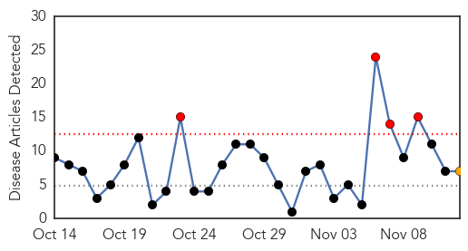
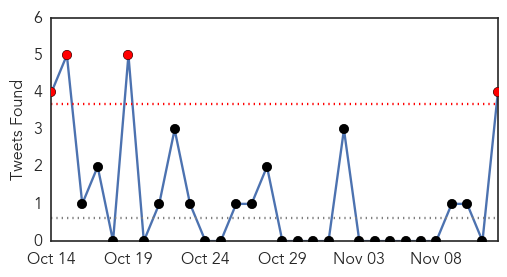
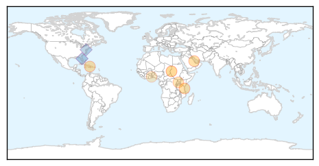
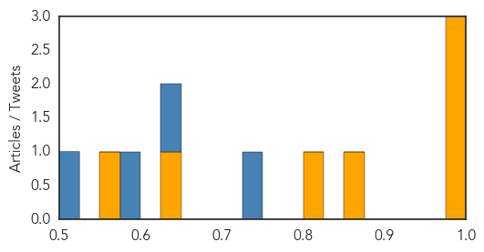
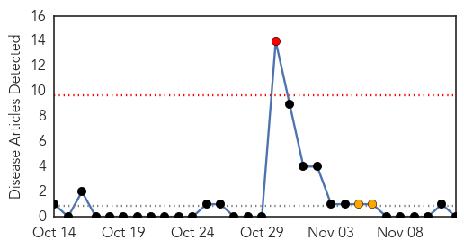

Cholera
30-Day Web Trend
4 alerts, 1 warnings

30-Day Twitter Trend
7 alerts, 0 warnings

Article Locations
Article Confidences
Top Articles:
- 0.998
- Iraq Fights Cholera Epidemic
- 0.998
- United Republic of Tanzania : Cholera outbreak 2015 Situation Report No.1 (as of 10th November 2015) - United Republic of Tanzania
- 0.980
- H5N1: Haiti: More than two dozen cases of cholera recorded at Anse-à-Pitres (updated)
- 0.863
- Gov’t to Pick Money from Treasury without Parliament Approval
- 0.802
- The most from the coast
- 0.641
- Buem MP builds 'pure water' factory in 'old' cemetery
- 0.556
- Thousands flee homes for safety in S. Sudan's Unity state
Top Tweets:
- 0.908
- AFD blog `OCHA: Cholera’s Resurgence in Haiti' Cholera https://t.co/wnvk9UTxvA h/t
- 0.786
- RT: Haiti: Cholera outbreak puts 15 communes on red alert h/t https://t.co/WSSmSdbtEQ
- 0.697
- .@UN Cholera in Haiti keeps killing: 15 communes on Red Alert https://t.co/54QdT2eQb4
- 0.666
- >450,000 cholera cases in Haiti is from UN envoy Paul Farmer. Caseload is higher acc to https://t.co/JmaSfmyT4f
- 0.575
- RT: https://t.co/ZrcExLSqsT D. Legros cholera : We have 2 speak 4 people who have no voice & no access 2 water; they r…
- 0.521
- RT: Only 30% of cholera cases are usually diagnosed during epidemics; w/out hospitals, Syria could be worse. @soniashah https:/…
Bubonic Plague
30-Day Web Trend
1 alerts, 2 warnings

30-Day Twitter Trend
1 alerts, 0 warnings

Article Locations

Article Confidences

Top Articles:
-
No articles found for Nov 12, 2015
Top Tweets:
-
No tweets found for Nov 12, 2015